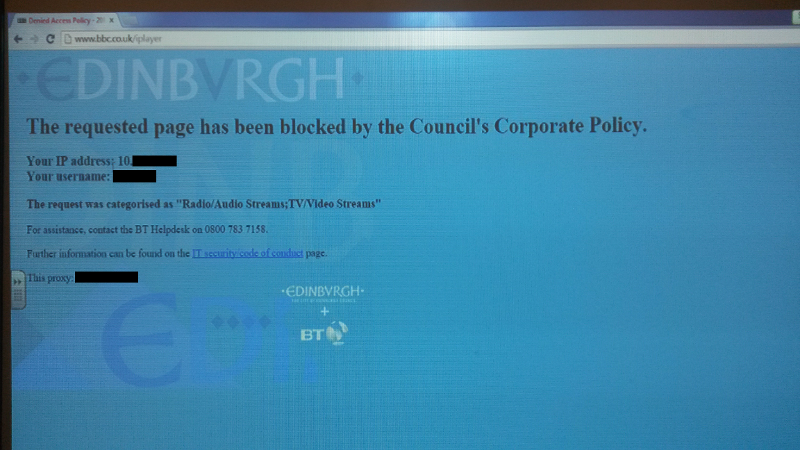

City of Edinburgh Council censors the BBC in schools
We can debate another time about the wisdom and efficacity of
filtering the Internet in schools in general. It can be an emotive
issue. For the moment let us assume that it makes sense, we all
want to protect our children after all.
The photograph below taken earlier at my son's school goes well
beyond that. He goes to the Gaelic school in Edinburgh and the BBC
iPlayer is one of the few places on the Internet with substantial
content appropriate for schoolchildren. So in the first instance
it's disruptive to his schooling.
But the problem goes deeper. Here is the slippery slope. Perhaps
it is ok to filter nasty or even just objectionable things on the
Internet, we have assumed that this is the case. Here we have
somebody in the local government who has taken the decision to
censor access to the Internet on a completely different basis: the
form it takes. Radio and Television, audio and video are
forbidden. No matter if the purpose is legitimate or educational
or not. It's the BBC fer chrissakes.
It's hardly a question of scarce resources, or at least it
shouldn't be. If it is there is something very wrong. This is in
the centre of a city with decent, modern infrastructure. Someone
has just decided that a whole class of content is not allowed.
That some anonymous civil servant can take these decisions
arbitrarily is a very big problem.
But, it's all good. In fact it's a perfect opportunity to teach my
son about using things like Tor to evade censorship. It's just a
bit strange for this to be necessary in a "civilised" place like
Edinburgh.
